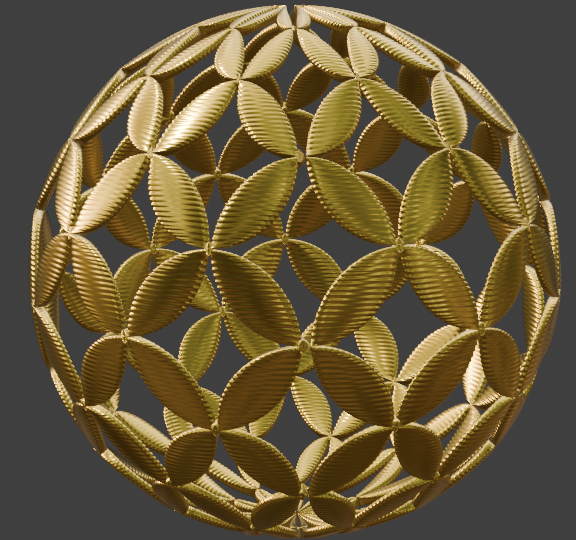

Drawing the Impossible: Exploring Hyperbolic Geometry
People often view certain tasks as impossible—until an innovator steps in, challenges the boundaries of belief, and turns the improbable into reality. For instance, flying was considered as impossible until the Wright brothers successfully flew their first airplane in 1903. Similarly, for centuries, regular tessellations were thought to include only squares, triangles, and hexagons. This belief persisted until Lobachevsky, Gauss, and Bolyai introduced the groundbreaking concept of hyperbolic geometry, revealing an entirely new world of possibilities.
Before we dive into the world of hyperbolic geometry, let's first explore Euclidean and Elliptic geometry. The main difference between these geometries is their curvature. Euclidean geometry, the one we commonly learn in schools, has zero curvature. We can think of it as a flat sheet of paper. On the other hand, elliptical geometry has positive curvature, which we can visualize as the surface of a ball or the Earth. In contrast, hyperbolic geometry has negative curvature, and we can imagine it as the surface of a saddle.
To better understand hyperbolic geometry, we use models and projections. This is similar to what we do with Earth: while the Earth is spherical, we project it onto a 2D flat surface to make it easier for us to read and write about it. Similarly, in hyperbolic geometry, we use the Poincaré disk model. The Poincaré disk model has several key characteristics that make it both interesting and aesthetically pleasing. First, it uses a unit circle. Second, the shapes at the center of the disk appear larger, while those near the edges appear smaller. Third, it is conformal, meaning it preserves angles. These combinations, if used by great artists, can create very unique art. One of the most famous examples is M.C Escher Circle Limit
In the following text, we will explore methods to combine hyperbolic geometry with the traditional batik kawung motif.
Math Concept
We can ascertain whether the {n, k} tessellation (Note: a polygon with n sides meeting k other polygons at each vertex) will form a tessellation in the Euclidean plane, the hyperbolic plane, or the elliptic plane by utilizing the following formula:
For Euclidean tessellation, \( \frac{1}{n} + \frac{1}{k} = \frac{1}{2} \)
For Hyperbolic tessellation, \( \frac{1}{n} + \frac{1}{k} < \frac{1}{2} \)
For Elliptical tessellation, \( \frac{1}{n} + \frac{1}{k} > \frac{1}{2} \)
How to Draw
Any polygon can be transformed into an n-leaf polygon using a straightforward algorithm
Initially, we identify the polygon's center by computing the average of the x-coordinates and y-coordinates of its points. This provides us with the coordinates for the center of the polygon.
Subsequently, a Quadratic Bezier curve is drawn, commencing from the polygon's center as the starting point, utilizing the midpoints of the polygon's vertices as control points, and concluding at the vertices themselves
This process is reiterated by repeating step #3 for each subsequent vertex.
Exhibit
Presenting the Kawung Ball by The Geometry of Batik Team. With the mathematical model in hand, creating a 3D model becomes a straightforward process. The resulting 3D model serves as the foundation for crafting this necklace using the lost wax casting method in our exhibit